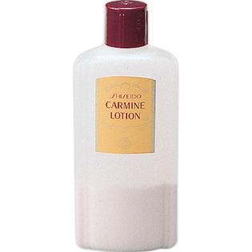
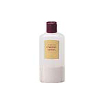

返回列表
产品名称：カーマインローション（N）

資生堂 カーマインローション（N） ２６０ｍｌ
メーカー 資生堂
JANコード 4901872325009
商品の特徴
肌をすこやかにととのえる、おだやかな収れん化粧水です。
・ふだんのお手入れや、肌がほてるときなどのお手入れにおすすめします。
成分・分量
-【成分】
水、エタノール、カンフル、グリセリン、カオリン、ベントナイト、フェノール、硫酸亜鉛、酸化亜鉛、酸化鉄
用法及び用量
【使用方法】
・よく振ってからお使いください。
・乳液をつけたあと、コットンに適量を含ませ、肌が冷たくなるまで、軽くたたくようにしてお使いください。